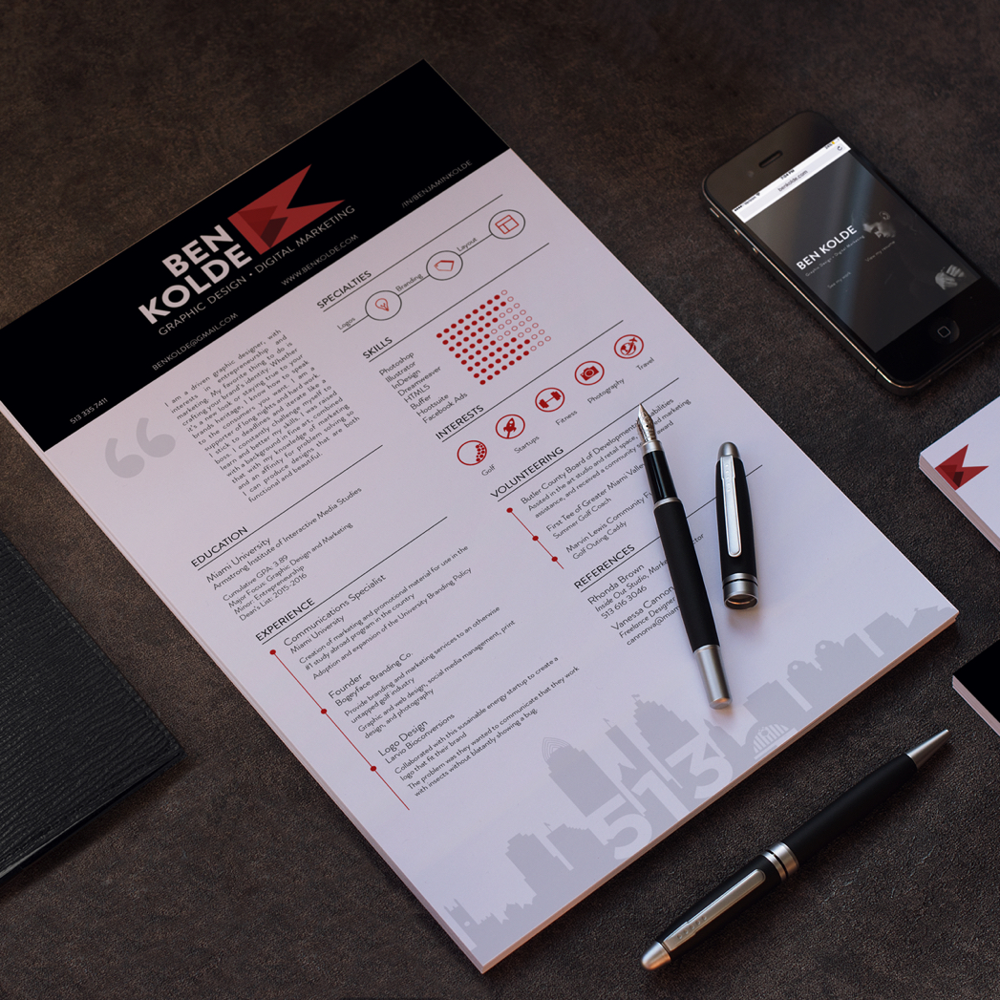
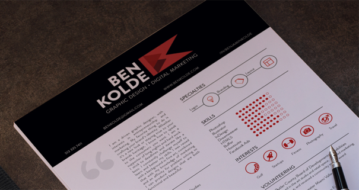
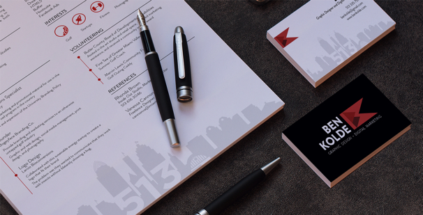
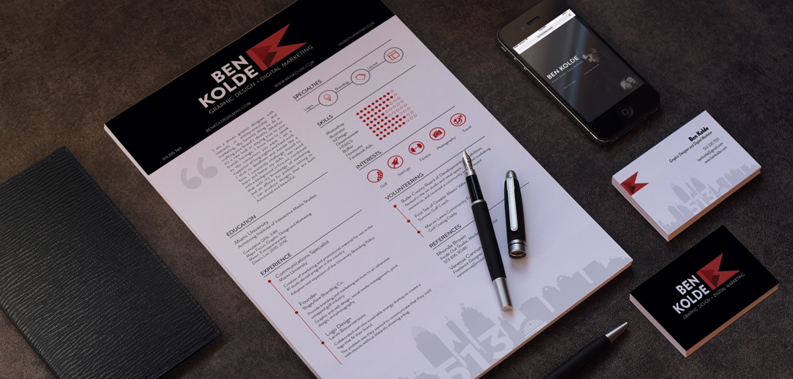

Personal Brand
Below you will find some mockups that I created for my personal brand. I selected the font, colors, and style all considering my brand. These items make up my personal identity.
One of the main things I had to create for myself was a personal logo. This was the part that I actually struggled with the most. I think the reason for this is because I thought nothing that I did in the previous iterations were good enough. Eventually I started to think about what some of my professional values are: driven, precise and passionate about what I do. I think this logo communicates these things through the sharp lines and the deep reds.

My goal with my resume was to reflect how I wanted to appear to employers and clients. I have a very creative mind but it is also wired for problem solving and analytical thinking. To communicate this I wanted to incorporate graphics as well as type and present it in a interesting and smart way. I really tried to nail the user experience of the resume so someone could find exactly what they are lookign for when they go to look for it.


At the bottom of my resume you see a skyline of Cincinnati. I created this illustration to show where I’m from and to show off my skills that may not be applicable in another part of my resume. As you can see from the picture on the left, my business cards mirror my resume branding. I did this to translate a consistent brand style. This is something that I always try to do in my work.

Takeaway
This project taught me how to dive deep into a person and/or company in efforts to communicate their values and story into their brand.